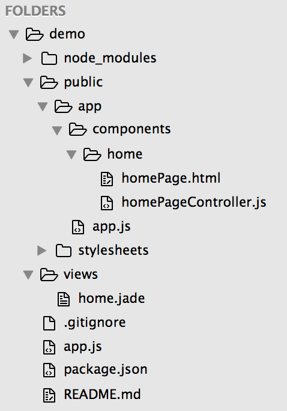

最近几年网页开发越来越容易上手，近半年来写了好几个网页的demo，觉得用 NodeJS 做后端，AngularJS 写前端的开发速度很快，并且不需要在多语言间来回切换，很适合用来快速做网页的MVP(最简可行产品)。
以下教程适用于 NodeJS 和任意前端框架组合 (如 React.js, Vue.js等)
大纲：
- 安装node.js和npm (3 minutes)
- 了解文件夹结构 (3 minutes)
- 安装依赖模块 (2 minutes)
- 编写 home.jade (2 minutes)
- 编写 node.js 的入口文件 (5 minutes)
- 编写 AngularJS 的入口文件 (5 minutes)
1. 安装node.js和npm (3 minutes)
Mac OS:
如果还没有安装brew的话输入以下命令:
1/usr/bin/ruby -e "$(curl -fsSL https://raw.githubusercontent.com/Homebrew/install/master/install)"之后安装node.js:
1brew install node
Windows:
- 从官网上下载和安装 node
注意: 安装成功后，可能要重启电脑才能运行
2. 文件夹结构 (3 minutes)
先上图:

解释：
- demo : 是我们要做的网站根目录的名字
- demo/node_modules : 网站依赖模块所在的文件夹 (无需自行创建，之后会自动生成)
- demo/public : 前端代码的根目录
- demo/public/app : AngularJS的根目录 (和Angular有关的前端代码都在这里开发)
- demo/public/app/components : Angular的每个components在此目录下新建一个文件夹放view和controller
- demo/public/app/components/home/homePage.html : Angular模块的范例，主页的html (MVC 的 View)
- demo/public/app/components/home/homePageController.js : Angular模块的范例，主页的控制器 (MVC 的 Controller)
- demo/public/app/app.js : AngularJS的入口文件
- demo/public/stylesheets : 前端的css文件
- demo/views : 服务器端渲染的html文件根目录
- demo/views/home.jade : 入口文件 (jade是一种模版引擎，不知道的话可以简单理解成html)
- demo/.gitignore : 如果项目在Github上备份的话，这里记录了不想同步的文件
- demo/app.js : NodeJS的入口文件
- demo/package.json : 设置文件
- demo/README.md : 项目的描述
3. 安装依赖模块 (2 minutes)
先创建好 package.json 文件， 然后输入以下内容：
|
|
之后在根目录下安装依赖模块:
安装结束后能看到，所有的 dependencies 都放在了 node_modules 文件夹内
4. 编写 home.jade (2 minutes)
先在指定文件夹内创建好 home.jade 文件， 然后输入以下内容：
|
|
解释：
- 就像正常写 html 一样，把需要的 js 文件放在 head 底下，第5小节会进一步描述文件结构
- 正如第二小节所提到的，/app/app.js 是 AngularJS 的入口文件
- ng-app 后面跟的名字是所 AngularJS 的 app 名称，如果没用过 AngularJS 的话可以先往下看，之后再查其他教程学习一下这个前端框架
- 注意，jade 文件支持用 tab 或者 空格 进行缩进，但不能混合使用 (和Python大法一样)
5. 编写 node.js 的入口文件 (5 minutes)
在根目录下创建好 app.js 文件，然后输入以下内容：
解释：
- 在这里，我们用到 node.js 的一个应用框架 Express.js
- 第 10 行将 view 目录设置为 express 的视图层目录
- 第 13-14 行表示用 json 格式来做文件的传输格式
- 第 16 行设置了所有在 public 文件夹内的文件都为静态文件
- 第 17-19 行将之前所安装的依赖模块设置成静态文件，并放在 /scripts 目录下 (可以再看一下 home.jade 是怎样访问这些文件的)
- 第 22-24 行表示在访问网站根域名的时候显示 home.jade 文件内的信息
现在可以启动网页服务器，并在任意游览器内通过 localhost:8088 来访问网页
1npm start此时如果将 home.jade 文件改成以下内容，可以在网页中看到成功输出的 Hello World :P
123456doctype htmlhtmlheadmeta(charset='utf8')bodyp Hello World :P
6. 编写 AngularJS 的入口文件 (5 minutes)
创建 demo/public/app/app.js 文件，并输入以下内容：
接下来创建 demo/public/app/components/home/homePage.html 文件，并输入以下内容：
最后创建 demo/public/app/components/home/homePageController.js 文件，并输入以下内容：
解释：
- 第一行的 “demoApp” 变量名和 home.jade 文件中的 ng-app 名称所相对应
- 这里用了 ngRoute 进行url跳转
- 网站的主页通过 homePage.html 显示，homePageController 控制
- message 变量中的 String 通过 $scope 双向绑定在html中显示
- 现在可以启动服务器，通过 localhost:8088 访问网页，并看到成功显示 Hello World :P1npm start